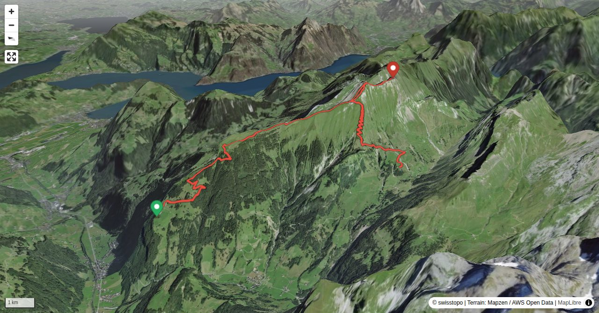

Der Brisen, höchster und wohl formschönster Berg der Schwalmiskette, besteht aus zwei markant geschnittenen Gipfeln. Der niedrigere ist von verschiedenen Seiten mit markierten Wegen erschlossen und wird entsprechend rege besucht, während der höhere viel Schwindelfreiheit und Trittsicherheit erfordert. Die hier vorgestellte Tour folgt dem aussichtsreichen Haldigrat und benutzt für den Abstieg eine wenig bekannte Variante durch die steilen Wiesen der Südflanke, Richtung Oberrickenbach.
Die Talstation der Seilbahn Wolfenschiessen Berghof – Brändlen liegt an der Strasse nach Oberrickenbach rund 10 Gehminuten von der Bahnstation Wolfenschiessen. Informationen zur Seilbahn:berghof.ch/berghof-ch/berghof-braendlen/seilbahn// +41 41 628 28 21
Quick Facts
| Summit elevation | 2413 m |
|---|---|
| Difficulty | SAC T5 Demanding alpine hiking with exposure, scrambling, and route-finding. Guide |
| Trailhead | Brändlen, Bergstation |
| Distance | 9.5 km (out-and-back) |
| Total ascent | ~1251 m |
| Elevation range | 1178-2413 m |
| Route sources | SAC Route Portal |
Photos


Route Map & Elevation
i
i
sac_scale (precise T1–T6) with
swissTLM3D Wanderwegart
fallback where OSM is silent (coarser T2/T3 and T4+ buckets).
Coverage: OSM 76.4% · swisstopo 17.0% · unknown 0.0%.Elevations computed from the inlined GPX track (SwissTopo height API).
Loading forecast…
3D Terrain View

Route Details
Überschreitung Brisen von Westen nach Süden
- Ohne Hoh Brisen: rund 40 Minuten kürzer.
Terrain & safety
Die Bewertung (T5) gilt für den anspruchsvollen Übergang vom Brisen zum Hoh Brisen. Man folgt einem Schrofengrat, stellenweise sehr luftig ist und einen ungefähr 15 m langen, ausgesetzten Balanceakt erfordert. Wird nur der Brisen begangen, gilt die Bewertung T3 (im Auf- und Abstieg). Bei Nässe ist auch die Besteigung des Brisen nicht zu unterschätzen (steile Grasflanken, am Gipfelkopf leichte Felsstufen).
Source: SAC Route Portal
Getting There & Back
Start: Brändlen, Bergstation (1178 m)
Directions from to Brändlen, Bergstation
End: Sinsgäu (Oberrickenbach), Bergstation (1640 m)
Directions from Sinsgäu (Oberrickenbach), Bergstation back to
Field Reference
| Trailhead | Brändlen, Bergstation | 46.90360, 8.40760 |
|---|---|---|
| Summit | Brisen Traverse (2413 m) | 46.89750, 8.46572 |
Coordinates are WGS84 decimal degrees (lat, lon). Emergency: 112 (general) or 1414 (Rega air rescue). Page URL: